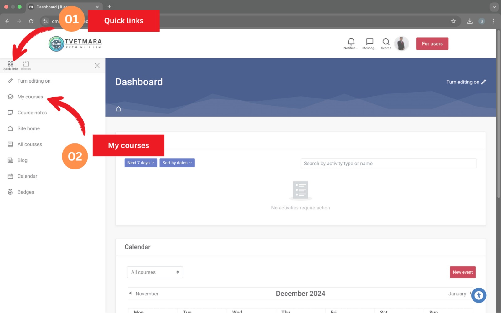
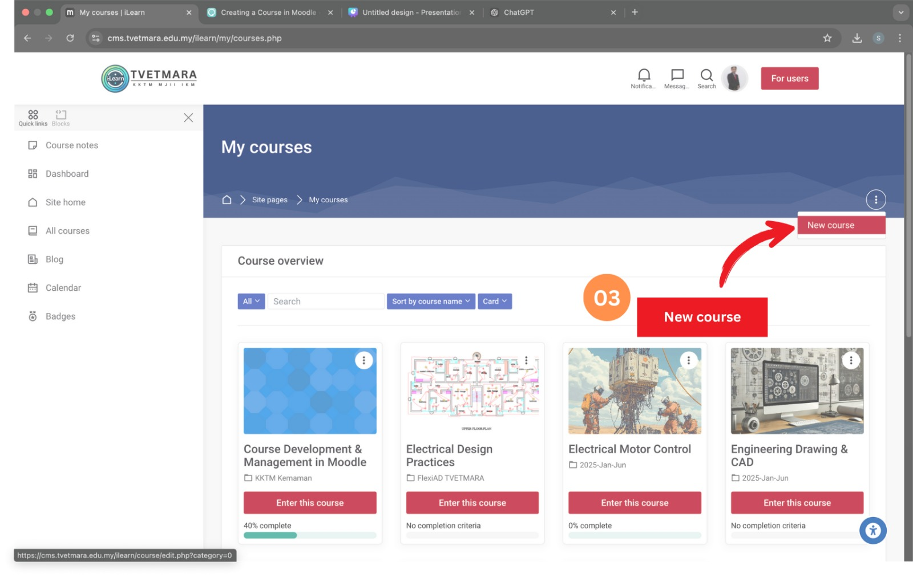
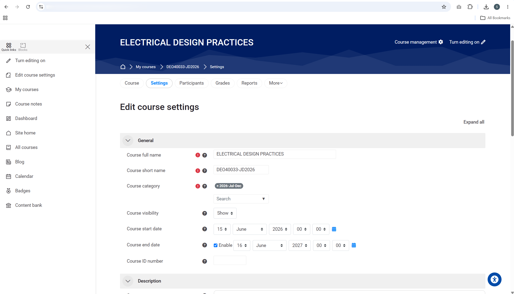
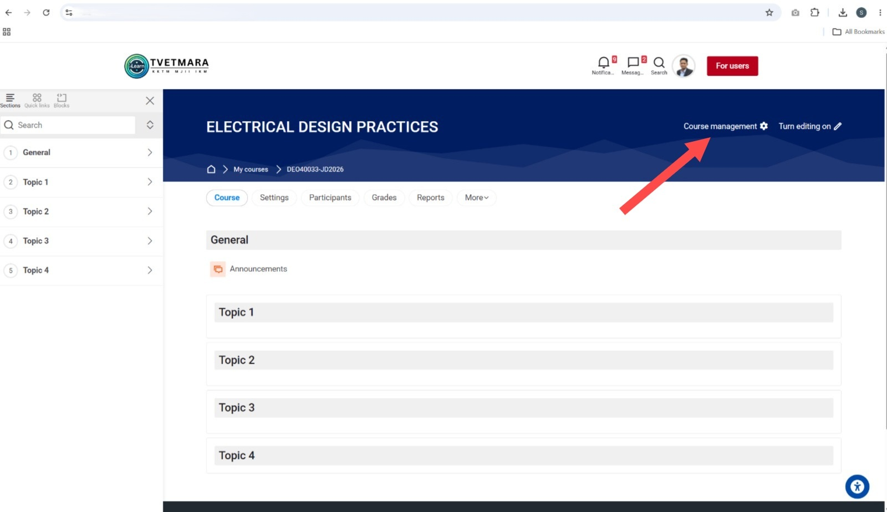
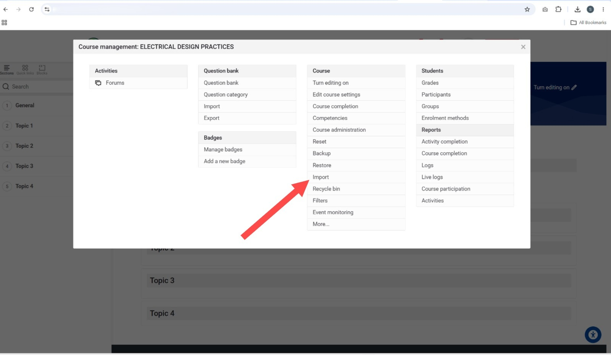
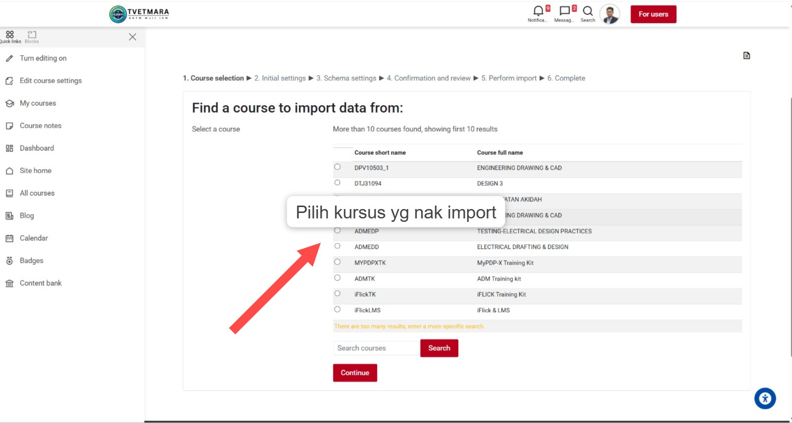
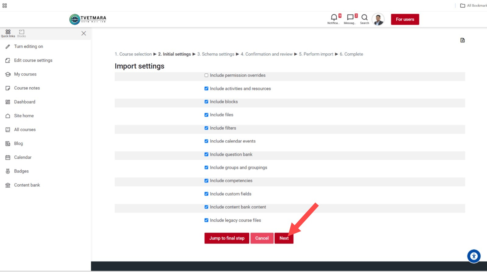
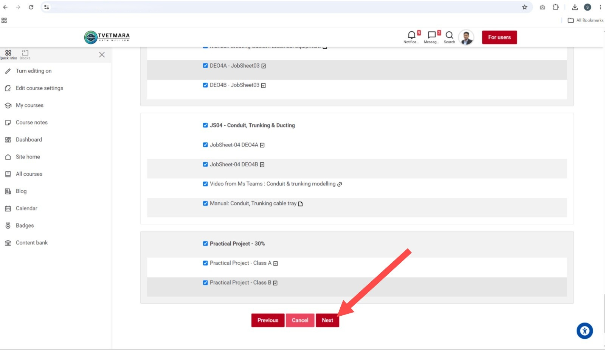
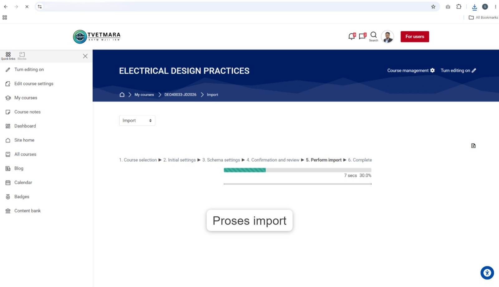
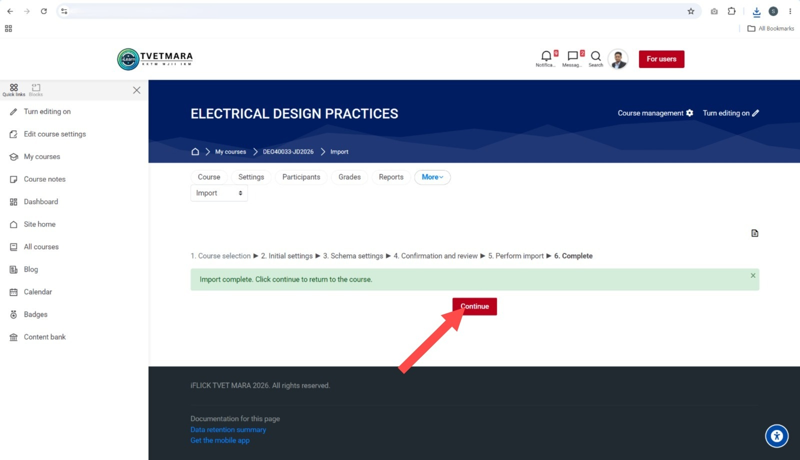

Panduan Cipta & Import
Kursus dalam iFlick
Modul pembelajaran kendiri yang membimbing anda menguasai proses pengurusan kursus dalam platform iFlick TVETMARA (Moodle) — langkah demi langkah.
Cara Guna Modul Ini
Kenali elemen navigasi sebelum anda mulakan pembelajaran.
Hasil Pembelajaran
Selepas menamatkan modul ini, anda akan dapat:
Apakah Import Kursus?
Fahami konsep asas sebelum memulakan proses.
Definisi Import dalam Moodle / iFlick
Import kursus ialah proses menyalin kandungan pengajaran — seperti topik, aktiviti, fail, dan bank soalan — dari sebuah kursus lama ke dalam kursus baru yang anda sediakan sebagai destinasi.
- Semester baru — ingin guna semula bahan pengajaran lama
- Kursus yang sama diajar kepada kelas atau kohort berbeza
- Ingin berkongsi bahan antara pensyarah dalam kumpulan
- Mahu mulakan kursus baru dengan template / struktur yang sedia ada
Bagaimana ia berfungsi?
Import bekerja secara additive — kandungan dari kursus sumber disalin dan ditambah ke dalam kursus destinasi. Kandungan yang sedia ada dalam kursus baru tidak akan dipadam.
Import vs Restore vs Backup
Kenal pasti perbezaan antara tiga fungsi ini supaya anda pilih yang sesuai.
| Fungsi | Kandungan Kursus | Data Pelajar | Kegunaan Utama |
|---|---|---|---|
| 📥 Import | ✔ Ya | ✘ Tidak | Salin bahan ke kursus lain, guna semula bahan lama |
| 💾 Backup | ✔ Ya | ✔ Pilihan | Simpan salinan penuh kursus sebagai fail .mbz |
| 🔁 Restore | ✔ Ya | ✔ Ya | Pulihkan kursus lengkap dari fail backup |
.mbz yang dihasilkan oleh Backup. Import pula membaca terus dari kursus lain yang ada dalam sistem — tiada fail perlu dimuat turun atau dimuat naik.
Padankan Penerangan dengan Fungsi
Seret (atau klik) setiap kad ke kategori yang betul. Ini membantu anda ingat perbezaan utama antara Import, Backup dan Restore.
.mbz diperlukan
.mbz sebagai salinan penuh kursus — boleh sertakan data pelajar
.mbz untuk pulihkan kursus lengkap beserta rekod dan markah pelajar
Gambaran Keseluruhan Proses
Lihat carta aliran penuh sebelum anda mulakan. Klik setiap nod untuk baca penerangan ringkas.
📝 Quiz Induksi — Semak Pengetahuan Asas
5 soalan umum berkaitan pengurusan pembelajaran digital. Ini bukan ujian — hanya untuk melihat tahap pengetahuan awal anda sebelum memulakan modul.
Langkah 1.1 — Akses My Courses
Mulakan dari Dashboard utama iFlick dan navigasi ke senarai kursus anda.
Login dan buka Dashboard
Log masuk ke iFlick TVETMARA. Anda akan diarahkan ke halaman Dashboard secara automatik.
Klik Quick Links → My courses
Di sudut kiri atas, klik ikon Quick Links untuk buka panel navigasi. Kemudian klik "My courses" dari senarai yang muncul.

Langkah 1.2 — Klik New Course
Dari halaman My Courses, buka pilihan untuk cipta kursus baharu.
Klik ikon ⋮ (titik tiga)
Di halaman My courses, lihat ke sudut kanan atas halaman. Klik ikon ⋮ (tiga titik / more options) untuk paparkan menu pilihan tambahan.
Pilih "New course"
Dari menu yang muncul, klik "New course". Anda akan diarahkan ke borang cipta kursus baru.

Langkah 1.3 — Isi Maklumat Kursus
Lengkapkan borang maklumat asas kursus baru anda.
Isi maklumat asas kursus
Borang "Edit course settings" akan dipaparkan. Isi medan wajib yang bertanda ● merah terlebih dahulu.

| Medan | Penerangan | Contoh |
|---|---|---|
| Course full name ● | Nama penuh kursus (dipapar kepada pelajar) | ELECTRICAL DESIGN PRACTICES |
| Course short name ● | Nama pendek unik (digunakan dalam URL) | DE040033-JD2026 |
| Course category ● | Kategori / jabatan kursus ini ⚠️ Pastikan pilih betul! | 2026-Jul-Dec |
| Course start date | Tarikh kursus mula aktif | 15 Jun 2026 |
| Course end date | Tarikh kursus tamat | 16 Jun 2027 |
Tatal ke bawah dan klik "Save and display"
Setelah semua maklumat diisi dengan betul, tatal ke bahagian bawah borang dan klik butang "Save and display". Kursus baru anda akan dipaparkan dan sedia untuk diisi melalui Import.
✏️ Aktiviti 1 — Susun Langkah!
Uji kefahaman anda tentang Unit 1. Seret setiap kad dan jatuhkan ke kotak "Langkah" yang betul.
Langkah 2.1 — Buka Course Management
Untuk import, anda mesti berada dalam kursus BARU (destinasi) dan buka panel pengurusan kursus.
Klik "Course management"
Setelah masuk ke kursus baru, cari butang "Course management ⚙" di sudut kanan atas halaman kursus. Klik untuk buka panel pengurusan.

Langkah 2.2 — Pilih "Import"
Dalam modal Course Management, cari dan klik pilihan Import.
Cari bahagian "Course" dan klik "Import"
Panel Course Management akan muncul dengan beberapa bahagian. Di bawah bahagian "Course", klik "Import" untuk memulakan wizard import.

Langkah 2.3 — Pilih Kursus Sumber
Langkah pertama wizard: pilih kursus lama yang akan dijadikan sumber import.
Pilih kursus lama dari senarai
Senarai kursus yang anda ada akses akan dipaparkan. Klik radio button di sebelah kursus yang ingin diimport kandungannya. Gunakan kotak Search jika kursus terlalu banyak.

Langkah 2.4 — Import Settings
Tetapkan jenis kandungan yang ingin anda import dari kursus sumber.
Semak dan tetapkan pilihan import
Halaman Import settings memaparkan senarai jenis kandungan. Semua pilihan ditanda (✅) secara lalai. Nyahpilih mana-mana yang tidak diperlukan, kemudian klik "Next".

| Pilihan | Disyorkan | Nota |
|---|---|---|
| Include activities and resources | ✔ Ya | Semua aktiviti dan bahan kursus |
| Include files | ✔ Ya | Fail PDF, video, dokumen |
| Include question bank | ✔ Ya | Soalan quiz dan ujian |
| Include blocks | ✔ Ya | Blok tambahan di sidebar kursus |
| Include permission overrides | ✘ Pilihan | Tidak perlu bagi kebanyakan kes |
Langkah 2.5 — Schema Settings
Pilih topik dan aktiviti spesifik yang ingin diimport.
Pilih kandungan spesifik
Senarai semua topik dan aktiviti dari kursus sumber dipaparkan. Tandakan yang ingin diimport atau nyahpilih yang tidak diperlukan. Secara lalai, semua dipilih. Klik "Next" apabila selesai.

Langkah 2.6 — Semak & Sahkan
Langkah terakhir sebelum import dijalankan — semak ringkasan kandungan.
Semak ringkasan import
Halaman ini memaparkan ringkasan lengkap apa yang akan diimport. Semak dengan teliti untuk pastikan kandungan yang dipilih adalah betul.
Klik "Perform import"
Setelah berpuas hati, klik butang "Perform import" untuk memulakan proses. Anda juga boleh klik "Previous" untuk kembali dan buat perubahan, atau "Cancel" untuk batalkan.
Langkah 2.7 — Proses Import Berjalan
Sistem sedang memproses dan menyalin kandungan — tunggu sehingga selesai.
Tunggu proses selesai
Progress bar akan dipaparkan menunjukkan peratusan import yang selesai. Masa bergantung kepada saiz kursus — biasanya 1 hingga 5 minit.

Langkah 2.8 — Import Selesai! ✅
Import berjaya — kembali ke kursus anda untuk semak kandungan baru.
Mesej "Import complete" dipaparkan
Mesej berwarna hijau "Import complete. Click continue to return to the course." menunjukkan bahawa import telah berjaya dilaksanakan.

Klik "Continue"
Klik butang "Continue" untuk kembali ke halaman kursus. Anda akan dapat melihat semua kandungan yang telah berjaya diimport dari kursus lama.
✏️ Aktiviti 2 — Padankan Langkah!
Padankan setiap nama langkah wizard Import dengan penerangan yang betul. Seret nama langkah ke kotak penerangan yang berpadanan.
Rumusan
Ringkasan semua langkah yang telah anda pelajari dalam modul ini.
- Import dimulakan dari kursus BARU (destinasi), bukan dari kursus lama
- Import tidak memadam kandungan sedia ada dalam kursus destinasi
- Import tidak membawa data pelajar — selamat untuk kohort baru
📋 Penilaian Kendiri
8 soalan untuk menguji keseluruhan kefahaman anda tentang proses Import kursus dalam iFlick.
Tahniah! Anda Berjaya!
Anda telah berjaya menamatkan keseluruhan modul Panduan Cipta & Import Kursus dalam iFlick. Anda kini sudah bersedia untuk menguruskan kursus dalam iFlick TVETMARA dengan lebih yakin dan berkesan.
- Cipta kursus baru dalam iFlick
- Buka Course Management dan pilih Import
- Lengkapkan 6 langkah wizard Import
- Bezakan Import, Backup, dan Restore